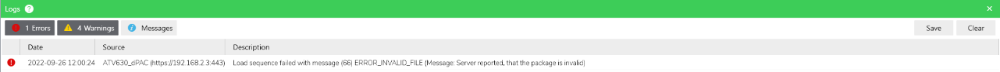
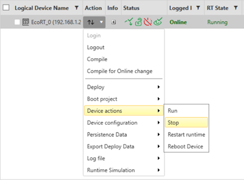
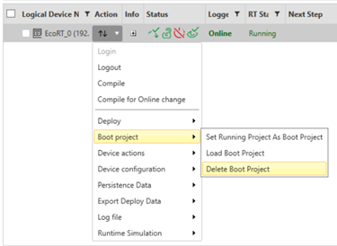
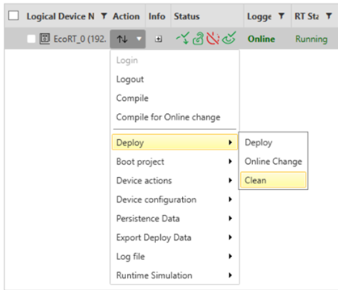
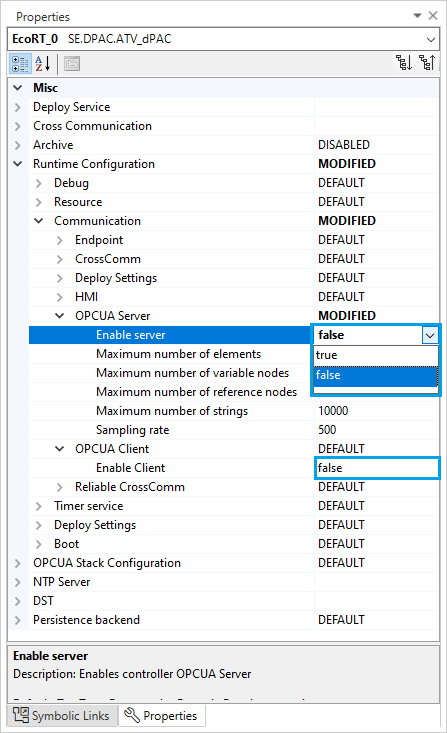

To allow a reliable firmware update procedure, stopping or cleaning the EcoRT application could be needed in the ATV Distributed PAC, to free-up enough memory.
The image below illustrates the displayed error, when the firmware update can’t be achieved due to a lack of memory:

The following table describes the steps to solve the lack of memory error when updating the firmware of the ATV Distributed PAC:
|
Step |
Description |
Action |
|---|---|---|
|
1 |
Stop the application
NOTE: The device should not operate until the firmware update is completed.
|
Open the Deploy and Diagnostic Editor in EcoStruxure Automation Expert → click on Action → select Device actions → select Stop  |
|
2 |
Delete the Boot Project |
Open the Deploy and Diagnostic Editor in EcoStruxure Automation Expert → click on Action → select Boot project→ select Delete Boot Project  |
|
3 |
Clean the state of the ATV Distributed PAC |
Open the Deploy and Diagnostic Editor in EcoStruxure Automation Expert → click on Action → select Deploy → select Clean  |
|
4 |
Verify that:
|
NOTE: In case of doubt, disconnect all analog and digital inputs and outputs from the device before applying the firmware update.
|
|
5 |
Disable the OPC UA Server and Client, if the are already enbaled.: |
Open the system tab in EcoStruxure Automation Expert → click on Logical Devices→ select the device to display its properties → display the Runtime Configuration options → Disable OPC UA server and Client if the are already enbaled, as mentioned in the following image:  |
|
6 |
Deploy the Device configuration and Restart |
Open the Deploy and Diagnostic Editor → click on Action → select Device actions → select Stop
|